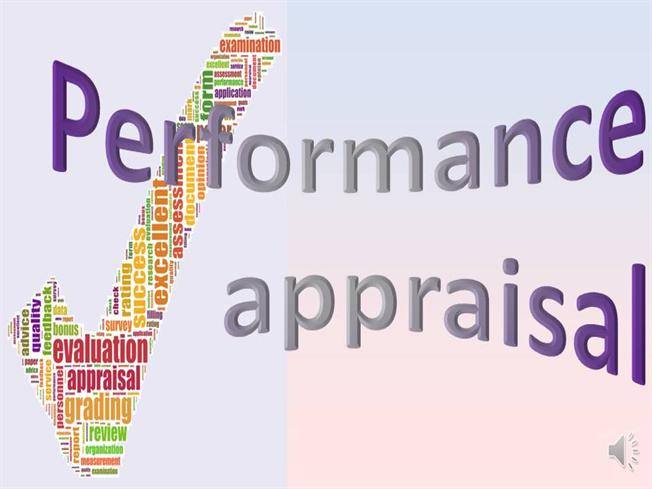

Standard practise of organizations to evaluate employee’s performance once in a year. The process is called “Performance Appraisal”. There are many standard process follows in the Industry for Performance Management & Appraisal. We will teach you all the process with demonstration. The major standard process are as follows. Graphic Rating Scale Alternation Marking Methods Paired Comparison Method Forced Distribution Method Narrative Forms Behaviourally Anchored Rating Scale (BARS) Critical Incident Method Management By Objectives(MBO) Performance Appraisal Software Programs Electronic Performance Monitoring(EPM)
